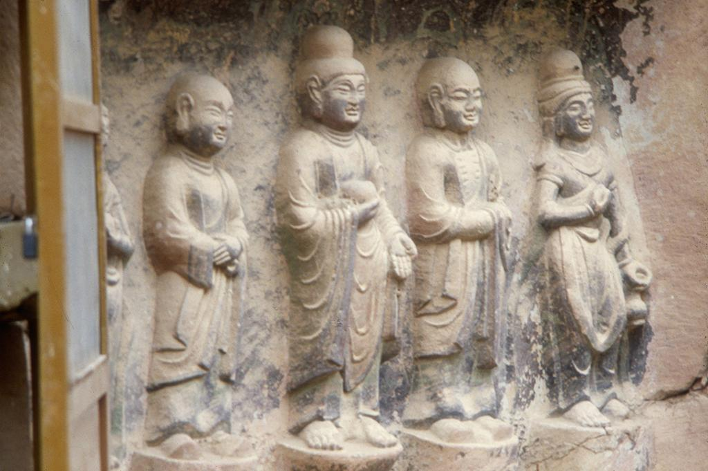

|  Tang Dynasty. Bingling Caves. Niche 31. Buddha, Disciples, and Bodhisattva.. sculpture. http://library.artstor.org/asset/SKIDMORE_10313807189. |
Quick Facts
Scultpure Tang Dynasty Gansu Province Buddha: .82m Diciples: .69m Bodhisattva: .68m Northwestern University |
Carved into the walls of the Bingling Caves in the Gansu Province, “Bingling Caves. Niche 31. Buddha, Disciples, and Bodhisattva” depicts four figures, each standing on a small pedestal, carved into a rock face. To the sides of the Buddha, two disciples stand wearing long robes. With long ears, they are also bald. To the extreme right stands Bodhisattva, with a smiling face and their extended hands in a somewhat jovial manner. The Bodhisattva is wearing a headdress that drapes over their shoulders. The Buddha is standing in between his disciples and is carrying a fruit in his right hand. He is also wearing a robe, but his one has more ripples in it than the others, giving the appearance of a longer robe. Buddha’s left hand is outward facing and at the level of his waist. He is also wearing a headdress with the bun on top of his head. This headdress might actually be hair though, since the texture is nondescript. All four figures have quite happy expressions, with slight smiles in their mouths and eyes. |
|---|